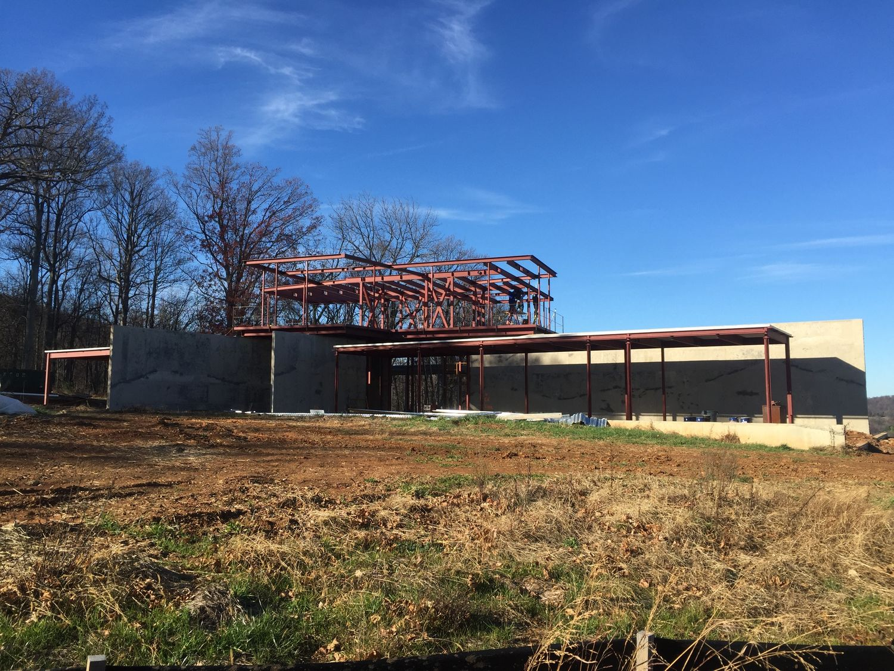
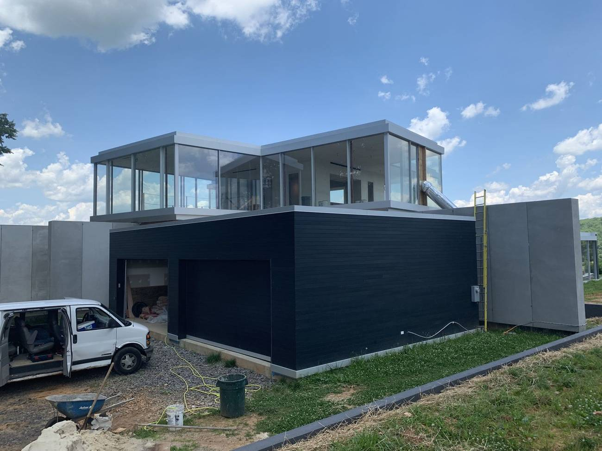
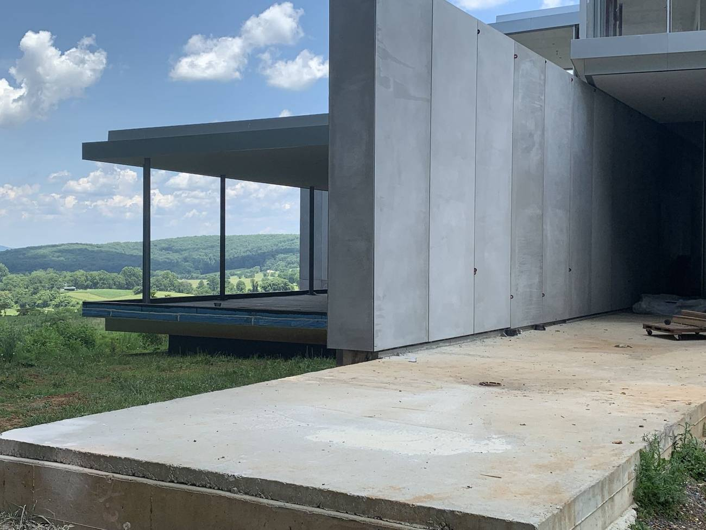
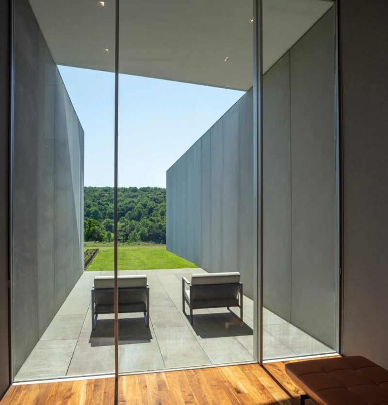
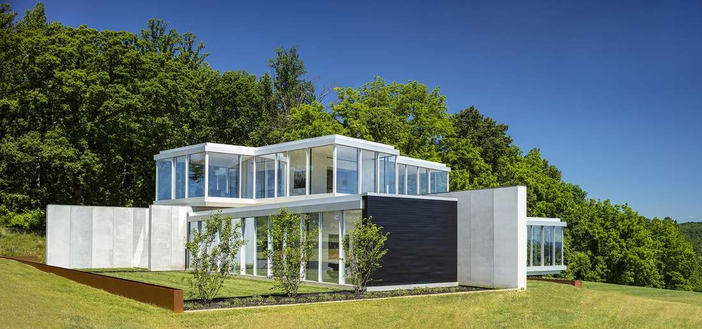
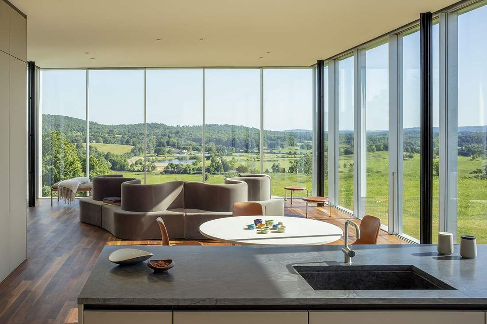
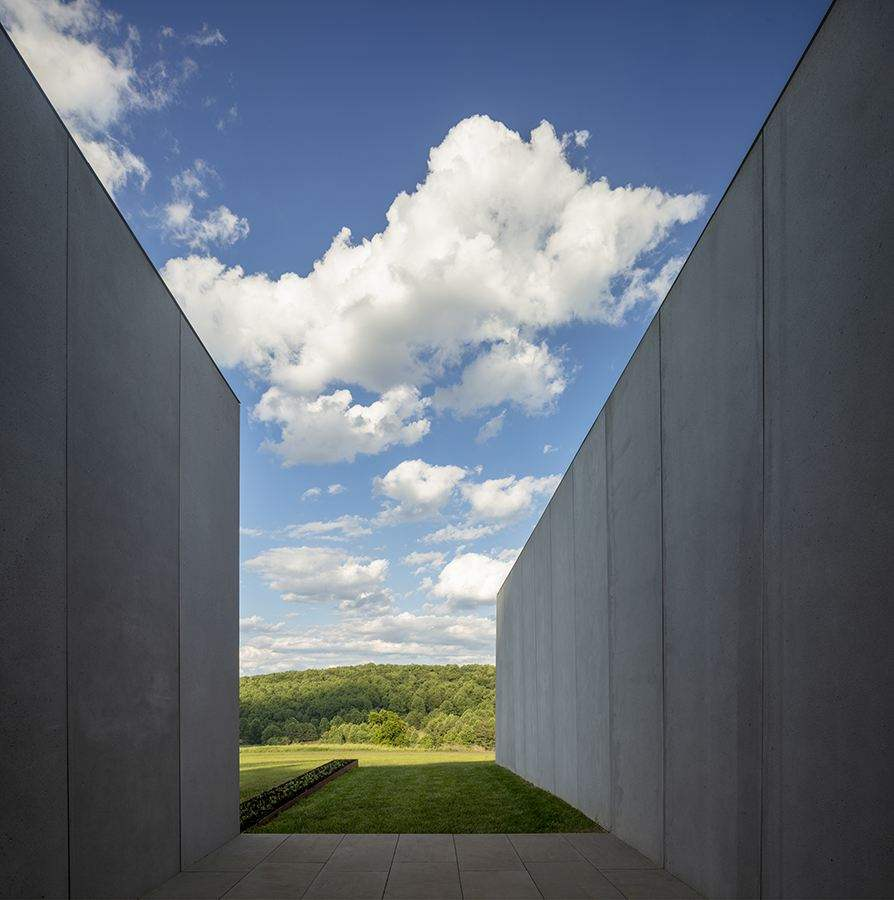
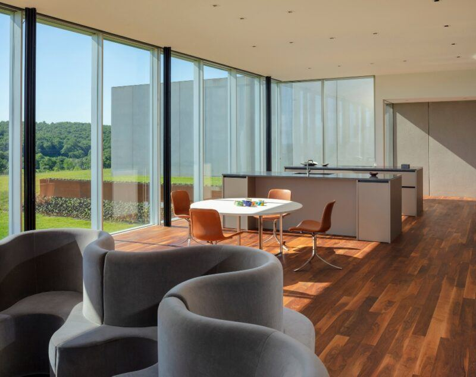

A guest house. The main house is Wildcat Mountain.
Liminal House is the guest house on the Wildcat Mountain property in The Plains. The main house is Wildcat Mountain. PureForm Builders, led by Steve Howard (now Square One), built the guest house.
The guest house explores void spaces inserted between a series of heavy, static walls that feel of the earth and act as portals to the surrounding landscape. Between them, glazed public and private volumes become lenses to the countryside. A central pavilion unites the ground-level elements, and a thin glazed volume balanced above rotates to capture 360-degree views.
These construction photographs are the guest house PureForm Builders built: steel, board-formed concrete, and a glass curtain wall. The main house on the property is Wildcat Mountain.







